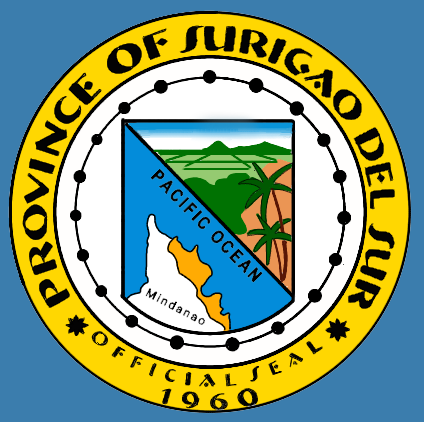
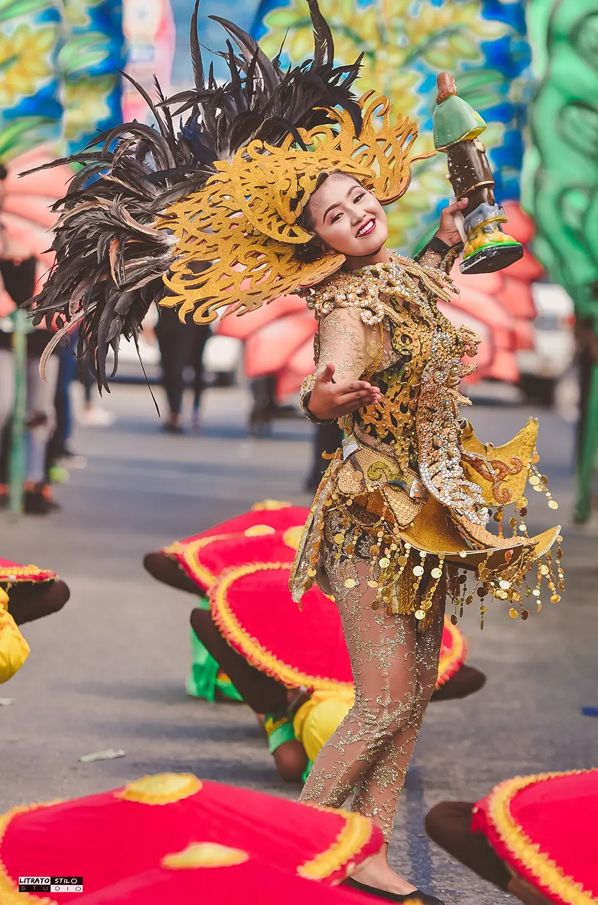
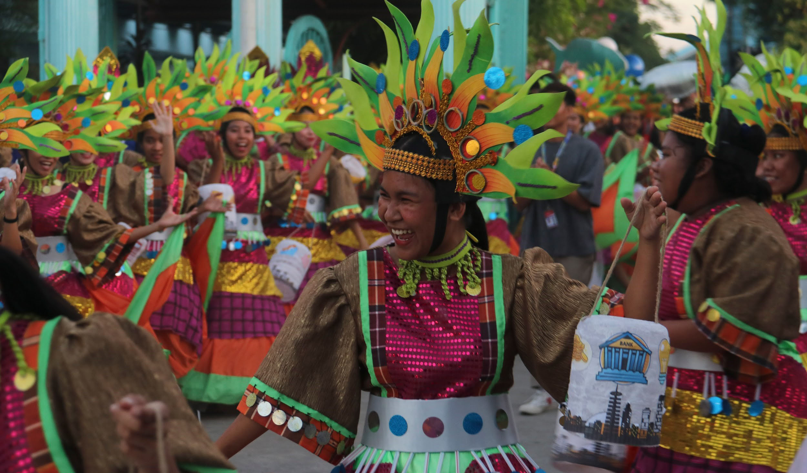

Adlaw Nan Lanuza Festival is a lively celebration that commemorates the founding of the municipality while showcasing its culture and natural attractions. It includes street dancing, cultural presentations, and community activities that reflect the daily life of the people. Performances often highlight fishing, farming, and coastal traditions. The festival promotes both cultural heritage and tourism in the area. It also encourages participation from different sectors of the community.
Picture a coastal town alive with music, dancers moving like ocean waves, and surfers riding the sea during the celebration. The combination of cultural and surfing activities creates a unique and exciting atmosphere. Visitors are drawn to both the performances and the natural beauty of Lanuza. Celebrated every June 21, the festival marks the town’s founding anniversary. This blend of culture and adventure makes Adlaw Nan Lanuza Festival truly distinctive.


The festival was established to commemorate the founding anniversary of Lanuza and to celebrate its cultural identity. It was designed as a way to bring the community together in honoring its history and achievements.
With the growth of tourism, especially surfing, the festival expanded to include eco-tourism activities and environmental awareness programs. Today, it serves both as a historical commemoration and a promotion of sustainable tourism.